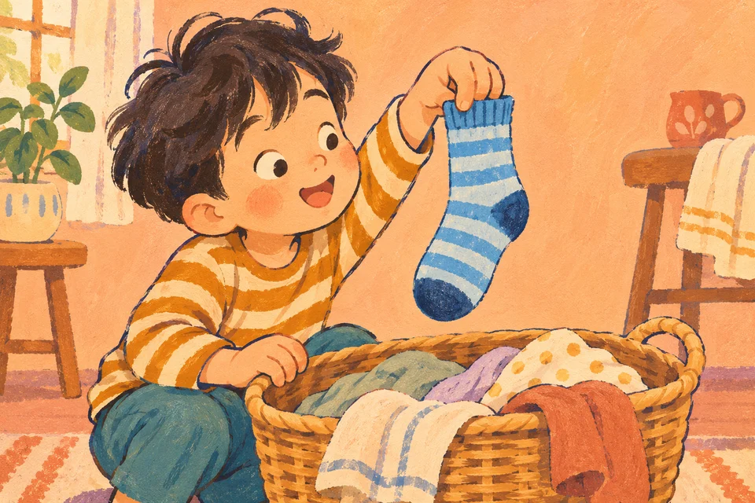

가족 앱
움직이는 동화책
짝꿍 양말은 어디에?
Where Is the Other Sock?

17장
마일로가 양말 한 짝을 찾았어요.
Milo finds one sock.
움직이는 그림을 불러올 수 없어 동화 표지를 표시했어요.
움직이는 동화책
Where Is the Other Sock?

17장
마일로가 양말 한 짝을 찾았어요.
Milo finds one sock.
움직이는 그림을 불러올 수 없어 동화 표지를 표시했어요.